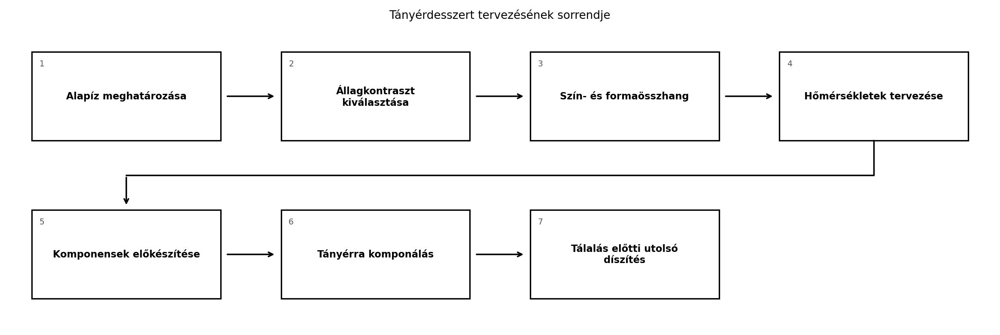

Egy korszerű étteremben a desszert gyakran nemcsak „egy szelet sütemény”, hanem önálló kompozíció: alaplap, krém, szósz, ropogós elem, gyümölcs és dísz kerül egy hideg tányérra. Ha a szakács csak egymás mellé teszi a komponenseket, a tányér zsúfolt lesz, a ropogós dísz megpuhul, a csokoládédísz szürke foltos lesz, a karamell elolvasztja a fagylaltot. A tányérdesszert akkor lesz jó, ha minden elemének szerepe van, és a díszeket is úgy készítjük el, hogy a vendég asztaláig megtartsák állagukat és formájukat.
A tányérdesszertet érdemes úgy felépíteni, mint egy kis épületet: az alapot a szósz vagy morzsa adja, a fő tömeg a krém, a fagylalt vagy a zselé, a tetejére pedig ropogós dísz, gyümölcs és friss fűszernövény kerül. A tervezési sorrendet mutatja az alábbi folyamat:

A fenti lépések közül a díszítés az utolsó, mert a ropogós és a hideg elemek csak ekkor találkozhatnak biztonságosan.
A tányérdesszert ropogós elemeinek közös jellemzője, hogy szárazon kell készülniük, és szárazon kell tárolni, különben elveszítik roppanásukat.
Definíció. A tuile (franciául „cserép”) vékonyra terített, sütőben megsütött, még melegen íveltre formázott ropogós lap. Készülhet mandulából, mogyoróból, kakaóból, citrusos változatban is. Az ostya tésztája hígabb, és két forró ostyasütő lap között sül; a piskótadísz kész tészta vékony szeletéből, alapja pedig a sütés után szárított lapból készül. Mindhárom ropogós elem allergénkockázatot hordoz: a lisztből vagy süteményből glutén, a tojásfehérjéből tojás, a vajból tej, a mandulából diófélék kerülhetnek bele.
Technológia. A tuile-hoz az alapanyagokat csomómentesre keverjük, majd hűtőben 20–30 percig pihentetjük. A masszát sablonnal vagy kanál hátával vékonyra húzzuk sütőpapírra. A sütőből kivéve a lapot 15–30 másodpercen belül hengerre, tál hátára vagy rácsra fektetjük, így felveszi a kívánt formát. A kész tuile-t légmentesen zárható dobozban, papírréteggel elválasztva tároljuk.
A képsor a technológiai lap 6–9. lépését mutatja. A kritikus pillanat a 4. kép: a forró lapot 15–30 másodpercen belül kell a hengerre tenned, mert kihűlve eltörik. A tepsi forró, ezért hőálló kesztyűt használj. A HTML-kiadásban a lépések egyenként lejátszhatók.
Kritikus pont.
A tojásfehérjét felhasználásáig hűtve tároljuk. A tuile-t sütés után
száraz, szagmentes környezetben tároljuk; nedves krémre csak a tálalás
előtti utolsó pillanatban tegyük. A híg masszát a hűtőben tilos túl
hosszú ideig pihentetni, mert a tojásfehérje és a vaj mikrobiális
kockázatot jelenthet; a gyártói és a HACCP-tervben rögzített idő a
mérvadó (ellenőrizendő: konkrét pihentetési idő).
Higiénia.
A kész ropogós díszek nedvességre érzékenyek, ezért kesztyűs kézzel,
tiszta csipesszel fogjuk meg. A tányérra való helyezés előtt ne nyúljunk
a nedves krémbe ugyanazzal az eszközzel, mert a keresztszennyeződés
mellett a dísz is átnedvesedik.
A csokoládédíszek – forgács, csokoládéreszelék, fóliára húzott vékony csík, tányérra rajzolt minta, kinyomott dísz – fényessége attól függ, hogy a csokoládé kakaóvaj-kristályai megfelelően kialakultak-e. Ezt a folyamatot temperálásnak nevezzük, amelyet a Kakaó, csokoládé, kávé és tea alfejezetben tanultunk.
Definíció.
A temperálás a csokoládé szabályozott felmelegítése és lehűtése a stabil
kakaóvaj-kristályszerkezet kialakulásáért. A cél: fényes,
szobahőmérsékleten is törő dísz készítése.
A gyakorlati hőfokok csokoládéfajtánként és gyártónként eltérnek. Tanulási értékként érdemes megjegyezni például: étcsokoládénál az olvasztás kb. 45–50 °C, a lehűtés kb. 27–28 °C, a felhasználás vagy visszamelegítés kb. 31–32 °C; tej- és fehér csokoládénál a felső és az alsó hőfok alacsonyabb (ellenőrizendő: gyártói adatlap). A pontos hőfokot a csokoládé gyártójának adatlapja adja meg.
Eljárás.
A csokoládét késsel apróra törjük, majd kétharmadát vízgőz fölött
óvatosan felolvasztjuk. A visszamaradó apró darabokat hozzákeverjük,
hogy csökkentsük a hőmérsékletet; így a stabil kristályok „elindulnak” a
masszában. Kész dísz akkor, ha a temperált csokoládé vékony csíkja
sütőpapíron pár perc alatt fényesen megdermed. A csokoládéba víz ne
kerüljön, mert a massza megkeményszik, elveszíti fényét. A díszeket
páramentes, hűvös helyen, zárható dobozban tároljuk; a hűtőszekrényből
kivett csokoládét a tálalás előtt óvatosan, hőmérséklet-kiegyenlítéssel
kezeljük.
Az első öt kép az eljárás sorrendje, az utolsó három az eredmény. A fényes, élesen törő dísz (6.) a jól temperált csokoládé jele; a matt, szürkés, foltos felület (7., zsírvirág) azt mutatja, hogy a kristályszerkezet nem alakult ki – ilyenkor újraolvasztod és újratemperálod. A 8. kép a víz hatását mutatja. A HTML-kiadásban a lépések egyenként lejátszhatók.
Tilos.
Csokoládét forró víz fölött, gőzben fedő nélkül tárolni, mert a
lecsapódó víz a masszát tönkreteszi. A temperálás során a víz és a
hirtelen hőhatás egyaránt káros.
A cukordíszek a tányérdesszert fényes, borostyánszínű elemei lehetnek: karamellcsepp, cukorfonal, vékony karamellap, fűszeres karamell.
Definíció.
A karamell forró, olvadt cukor, amelyet 160–180 °C
közötti hőmérsékletre melegítünk; a szín borostyánbarna, az íz enyhén
kesernyés édesség. A cukorfonal olvadt karamellből
húzott, nagyon vékony szál, amely azonnal megdermed.
A karamellt kétféleképpen indíthatjuk: száraz módon, amikor a cukrot lassan, közvetlenül a lábasban olvasztjuk, vagy nedves módon, amikor kevés vízzel keverjük, és a víz elpárolgása után karamellizáljuk. A nedves módszer egyenletesebb, de a víz hirtelen hozzáadása a forró karamellhez tilos.
Biztonsági korlát.
A forró karamell hőmérséklete 160–180 °C is lehet (ellenőrizendő:
szakmai ajánlás). Égési sérülést okozhat, ezért a munkát csak tankonyhán
vagy oktatói felügyelettel gyakorold; otthon csak a leírt biztonsági
feltételekkel. A lábas keverője legyen hosszú nyelű, a munkalap legyen
tiszta, tűzoltótakaró vagy megfelelő oltókészülék legyen kéznél. A forró
karamellt tilos vízbe önteni, mert azonnal fröccsen.
Eljárás.
Ha a karamell elérte a borostyánszínt, a főzést úgy állítjuk meg, hogy a
lábas alját rövid időre hideg vizes tálba mártjuk; maga a karamell
ilyenkor sem érintkezhet vízzel. A karamellt szilikonlapra vagy
sütőpapírra csepegtethetjük, húzhatjuk, hajszálvékonyra fújhatjuk. A
kész cukordíszeket ne tároljuk hűtőszekrényben, mert a lecsapódó pára
megpuhítja őket; páramentes, zárt dobozt használjunk. A karácsonyi vagy
ünnepi desszertekhez használt karamelldíszeket lehetőleg frissen
készítsük, mert a levegő nedvességét hamar felveszik.
Az 1–4. kép a fenti eljárás, az 5. kép a munka megkezdése előtti ellenőrzőlista: a hideg vizes tál és a tűzoltó takaró már a főzés előtt kéznél legyen, ne akkor keresd, amikor baj van. Égési sérülésnél az elsősegély szabályai szerint azonnal hideg vízzel hűts. A 6. kép a legsúlyosabb hibát mutatja: a forró karamellhez öntött víz azonnal fröccsen. A HTML-kiadásban a lépések egyenként lejátszhatók.
A gyümölcs a tányérdesszert friss, savanykás vagy édes színfoltja. Használhatunk friss, fagyasztott, szárított vagy pürévé zselésített gyümölcsöt, de mindig a kompozíció íz- és állagkontrasztjához kell illenie.
Előkészítés.
A friss gyümölcsöt előbb hideg vízzel mossuk, majd papírtörlővel
megszárítjuk. A bogyós gyümölcsöket egészben, a citrusokat filézve, az
almát, körtét vékony szeletben használjuk; a vágott almát és körtét
citromlével kezeljük, hogy ne barnuljon. A fagyasztott gyümölcsöt
felolvadás után ne fagyasszuk vissza; a kiolvadt bogyós gyümölcsből
készült pürét azonnal felhasználjuk, vagy hűtve tároljuk a HACCP szerint
(ellenőrizendő: tárolási idő és hőmérséklet).
Higiénia.
A friss gyümölcs fogyasztható nyersen, de a mosás elmaradása
mikrobiológiai kockázatot jelent. A díszítésre szánt gyümölcsöt külön
vágódeszkán, a hústól és a tojástól elkülönítve készítsük elő. A friss
gyümölcs díszek tálalás előtt ne álljanak szobahőmérsékleten; hűtve,
letakarva tároljuk őket.
A tányérdesszert megtervezésekor egyszerre figyelünk az ízre, az állagra, a színre, a hőmérsékletre és az adagnagyságra. Ezt a szabályt használjuk majd az éttermi, vendég előtti tálalásnál is.
Szabály.
A tányérdesszertet a következő sorrendben tervezzük:
Íz.
A jó tányérdesszert általában 2–3 jól felismerhető ízre épül, a többi
elem ezeket támogatja. A csokoládéhoz illik a narancs, a só, a kávé; a
karamellhez a savanykás alma és a tengeri só; a gyümölcshöz a vanília és
a menta. A túl sok erős íz zűrzavart okoz.
Állag.
Egyszerre legyen krémes, ropogós, habos és hideg. A ropogós elemek
szárazságát megőrizzük, a krémet és a fagylaltot hűtve adjuk a tányérra.
A folyékony szósz akkor kerülhet alá, ha a tányér hideg, és a krém nem
áztatja el.
Szín.
A tányér leggyakrabban fehér vagy matt, hogy a desszert színei
látszódjanak. Használjunk természetes színeket: barna csokoládé, sárga
karamell, piros bogyós gyümölcs, zöld menta. A színek mellett a forma is
fontos: a magas krém, az ívelt tuile, a pontszerű szósz.
Hőmérséklet.
A hideg desszert tálalási hőmérsékletét a komponensek határozzák meg.
Tanulási érték: a krémeket, mousse-okat 5 °C alatt tároljuk, és
közvetlenül a hűtőből tálaljuk; a tányéron, fogyasztáskor néhány fokkal
melegebbek lehetnek; a fagylalté kb. −12 °C (ellenőrizendő: üzemi
HACCP-terv). A ropogós és karamelldíszeket szobahőmérsékleten, szárazon
készítjük elő. Ha meleg elemet használunk, azt csak az utolsó
pillanatban adjuk a hideg komponenshez, hogy ne olvassza meg.
Jogszabály.
A tányérdesszert allergéntájékoztatása ugyanúgy kötelező, mint a többi
ételnél: a 14 fő allergén jelenlétét a menüben, a kiszolgálásnál vagy az
étlapon jelezni kell (1169/2011/EU; a hazai nem előre csomagolt
élelmiszerekre vonatkozó részletszabály ellenőrizendő).
Összefüggés.
A tányérdesszert összeállítása a tálalási műveletek része: ha a tányér
hőmérséklete nem megfelelő, a hideg krém folyóssá, a fagylalt olvadóvá
válhat. A komponensek hőmérsékletét maghőmérővel vagy érzékszervi
vizsgálattal ellenőrizzük a tálalás előtt.
A tányérdesszerthez gyakran több adagot készítünk, mint a technológiai lap 10 adagos anyaghányada. A szorzószámot a korábbi anyaghányad-számításból ismerjük: ha 10 adagról 25 adagra térünk át, a szorzószám .
A mandulás tuile 10 adagos anyaghányadából vegyük például a vajat: 10 adaghoz 60 g vajat írunk elő. 25 adaghoz:
Tehát 25 adaghoz 150 g vajat mérünk ki. A többi nyersanyagnál ugyanezt a szorzót használjuk.
A tányérdesszert adagsúlyát is számoljuk ki: ha egy adag desszert elkészítéséhez 40 g krém, 20 g szósz, 15 g tuile, 25 g fagylalt és 15 g gyümölcs szükséges, az adagsúly:
Ez egy könnyed éttermi desszertadag; a vendéglátó üzlet saját adagsúly-előírása eltérhet.
A tuile a tányérdesszert ropogós eleme, ezért a technológiai lap az egész kompozíció elkészítéséhez használható.
Kitermelés: kb. 50 db, 8–10 cm átmérőjű, kb. 1 mm
vastagon terített lap (ellenőrizendő: tankonyhai próbasütés).
Adagsúly: kész tömeg kb. 5–6 g/db, adagonként 2–3 db
(12–15 g); a többlet a törés és a válogatás ráhagyása.
Anyaghányad-táblázat
| Nyersanyag | Mennyiség 10 adagra | Megjegyzés |
|---|---|---|
| Porcukor | 120 g | |
| BL55 finomliszt | 50 g | allergén: glutén |
| Mandulaliszt | 40 g | allergén: diófélék |
| Vaj | 60 g | olvasztva, allergén: tej |
| Tojásfehérje | 120 g | kb. 4 db M-es tojásból, allergén: tojás |
| Reszelt narancshéj | 2 g | |
| Só | 1 g |
Allergének: glutén, tojás, tej, diófélék. A mandulás és a nem mandulás változatok között keresztszennyeződés lehet, ezért a diófélékre allergiás vendégnél külön, tisztított eszközökkel készült változatot tálaljunk.
Eszközök és gépek: keverőtál, kézi habverő, mérleg, hűtőszekrény, gáz- vagy elektromos sütő, sütőpapír, sablon vagy paletta, henger vagy formázótál, rács, légmentes tárolódoboz.
Előkészítés
Elkészítés
Kritikus pontok
Készentartás és tálalás
A kész tuile-t légmentesen zárható dobozban, papírlapokkal elválasztva, száraz, hűvös helyen tároljuk. Tányérdesszertbe, habba vagy fagylalt mellé csak közvetlenül a tálalás előtt tegyük. A tányéron jelöljük az allergéneket.
Minőségi követelmények
Tipikus hibák és javításuk
Ez a munkalap a kompozíciós készséget gyakoroltatja; az összetevők mennyiségét az üzemi receptúra vagy a tankonyhai feladat határozza meg.
Cél: olyan tányérdesszert összeállítása, amelyben egyszerre van krémes, ropogós, gyümölcsös és hideg elem, és a díszeket tálalás előtt helyezzük fel.
Eszközök és anyagok: hideg tányér, digitális mérleg, maghőmérő, kis paletta, csipesz, eldobható kesztyű, sütőpapír, temperált csokoládé, karamelldísz, tuile, friss gyümölcs, mentalevél, gyümölcsöntet.
Biztonsági korlát.
A karamell és a csokoládé hőmérsékletét ellenőrzött eszközzel mérd. A
karamelldísz készítését tankonyhán vagy oktatói felügyelettel gyakorold;
a forró karamell égési sérülést okozhat. A hűtött komponenseket ne hagyd
szobahőmérsékleten.
Higiéniai előkészület: kézmosás, tiszta tányér, hűtő ellenőrzése, a kész komponensek lefedése. A gyümölcsöt és a friss fűszernövényt külön, tiszta vágódeszkán készítsd elő.
Lépések
Az 5. feladat összetevőiből (étcsokoládémousse, narancsfilé, mandulás tuile, karamellcsepp, menta) összeállított tányért a 3–7. lépés sorrendjében mutatja az ábra; a számok a felrakási sorrendet jelölik.
Az oldalnézeten látszik a magasság: a tuile állítva, a krém mellett áll, nem fekszik a nedves szószban, ezért nem puhul meg. A quenelle kissé eltolva ül, így marad üres tányérrész, a perem pedig tiszta. A HTML-kiadásban a tányér lépésenként felrakható, minden lépésnél a szabállyal.
Ellenőrzési pontok
Dokumentálás: a hűtött komponensek hőmérsékletét, a tálalás időpontját, az adagsúlyt és az allergéneket a konyhai dokumentációban rögzítsd.
A tányérdesszert és a díszek minőségét érzékszervi és mérhető módon ellenőrizzük.
Egy étteremben a csokoládés kávédesszert tetejére előre ráhelyezték a mandulás tuile-t. Mire a vendég megkapta a desszertet, a tuile megpuhult, és a csokoládédísz is szürke foltos lett. Kiderült, hogy a tuile-t a krémre tették, a csokoládét pedig nem temperálták, csak meleg vízfürdőben olvasztották. A tanulság: a ropogós és a nedves rétegeket az utolsó pillanatban szabad találkoztatni, a csokoládé fényéhez pedig temperálás kell. Azóta a díszeket külön, és a tálalás előtti utolsó lépésként teszik a tányérra.
A válaszokat a Megoldások élén találod.
1. feladat (A)
Csoportosítsd a díszeket: melyik ropogós, csokoládé-, cukor- vagy
gyümölcsdísz?
a) mandulás tuile
b) temperált csokoládéforgács
c) karamellcsepp
d) mentás eperfilé
e) vékony karamellap
f) sütőpapírra húzott csokoládécsík
2. feladat (A)
Számítsd ki a szorzószámot, ha a 10 adagos tuile-receptet 32 adagra
akarod átszámítani. Mennyi porcukor kell 32 adaghoz, ha 10 adaghoz 120 g
porcukor kell?
3. feladat (B)
Állítsd helyes sorrendbe a tuile készítését: sütés, masszakeverés,
hűtőben pihentetés, melegen formázás, sütőpapiros sablonnal terítés,
alapanyagok kiválasztása. Hol kell a tojásfehérjét hűtve tartani, és
melyik lépés szünteti meg a nyers tojás kockázatát?
4. feladat (B)
Tányérdesszerthez 40 g krém, 20 g szósz, 15 g tuile, 25 g fagylalt, 15 g
gyümölcs szükséges. Mennyi az adagsúly? Ha 8 adagot adunk ki, mennyi
gyümölcsöt, tuile-t és fagylaltot mérjünk ki?
5. feladat (C)
Tervezz egy tányérdesszertet a következő alapanyagokból:
étcsokoládémousse, narancsfilé, mandulás tuile, karamellcsepp, friss
menta. Add meg a rétegek sorrendjét, az allergénlistát, és indokold,
miért a nedves elemek után kerül a tuile a kompozícióba.
6. feladat (D)
Hibaelemzés: a gyakorlaton a csokoládédísz szürke foltos, a tuile rágós,
a tányér széle maszatos. Határozd meg mindhárom hibánál a lehetséges
okot, és írd le a helyes gyakorlatot.
Önellenőrzés – válaszok
1. feladat (A)
Ropogós (tészta)dísz: a; csokoládédísz: b, f; cukordísz: c, e;
gyümölcsdísz: d. A karamellap cukordísz, nem tuile.
2. feladat (A)
.
Porcukor:
.
3. feladat (B)
Sorrend: alapanyagok kiválasztása → masszakeverés → hűtőben pihentetés →
sütőpapiros sablonnal terítés → sütés → melegen formázás. A tojásfehérje
és a massza hűtött tárolása jó higiéniai gyakorlat (hűtő 0–5 °C,
ellenőrizendő: HACCP-terv); a nyers tojás kockázatát a teljes átsütés
(170 °C, 6–8 perc, a lap teljes felületén átsült, kihűlve ropogós)
szünteti meg – ha az üzem CCP-t jelöl ki, az a sütés.
4. feladat (B)
Adagsúly:
.
8 adag gyümölcs:
;
tuile:
,
azaz 8 adag, adagonként 15 g (kb. 2–3 db); fagylalt:
.
5. feladat (C)
Rétegek (a gyakorlati útmutató 3–7. lépése szerint): 1) narancsfilé és
gyümölcslé alapon, 2) étcsokoládémousse quenelle, 3) mandulás tuile
állítva a krém mellé, 4) friss menta, 5) karamellcsepp utolsóként. A
tuile-t azért a nedves elemek (szósz, mousse) után, a tálalás előtt
tesszük fel, és nem a szószba fektetjük, mert a nedvességtől megpuhul; a
karamellcsepp a legérzékenyebb a nedvességre, ezért az kerül fel
legutoljára. Allergének: glutén (a tuile lisztje), tojás, tej, diófélék;
a karamell és a narancs önmagában nem hordoz allergént, de a gyártási
környezet miatt a keresztszennyeződést a HACCP-terv szerint jelezni
kell.
6. feladat (D)
Szürke csokoládédísz: ok – nem temperáltuk, vagy víz került a masszába;
helyes gyakorlat – temperálás, száraz eszköz. Rágós tuile: ok – vastag
massza vagy alacsony sütési hőfok; helyes gyakorlat – vékony sablon, 170
°C körüli sütés, 6–8 perc. Maszatos tányér: ok – a szósz, krém
túlcsordult; helyes gyakorlat – tányér előkészítése, utolsó simítás,
tiszta perem.
A tányérdesszert sikeréhez a díszeket is technológiával készítjük: a tuile vékony, sütött, melegen formázott ropogós lap; a csokoládédísz csak temperált csokoládéból fényes és törő; a karamell 160–180 °C-on készül, égési veszélye miatt csak szabályos körülmények között dolgozunk vele; a gyümölcs friss, mosott, hűtött. A kompozíció tervezésének szabályát a szakács akkor alkalmazza, amikor ízt, állagot, színt és hőmérsékletet együtt ellenőrzi. A ropogós és nedves rétegeket utolsó pillanatban találkoztatjuk; a hideg komponensek tálalási hőmérsékletére a HACCP-tervben rögzített érték vonatkozik (ellenőrizendő: konkrét hőmérséklet). A tányérdesszert allergéntájékoztatása a 1169/2011/EU rendelet szerint kötelező. Ezt a tervezési szabályt használjuk az Ételkészítés, flambírozás, szeletelés és tálalás a vendég asztalánál alfejezetben is.